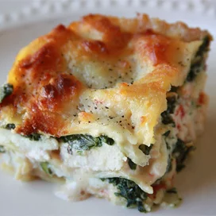

Lasagna Alfredo

Description
Lasagna Alfredo with chicken, ricotta and spinach. So good that my family requests it at least once a week. Serve with diced tomato as a garnish.
Ingredients
- 1 (16 ounce) package lasagna noodles
- 1 (10 ounce) package frozen chopped spinach
- 3 cooked, boneless chicken breast halves, diced
- 2 (16 ounce) jars Alfredo-style pasta sauce
- 4 cups shredded mozzarella cheese
- 2 pints ricotta cheese
- salt and ground black pepper to taste
Steps
- Preheat oven to 350 degrees F (175 degrees C).
- Bring a large pot of lightly salted water to a boil. Add pasta and cook for 8 to 10 minutes or until al dente; drain. Cook spinach according to package directions; drain.
- In a medium bowl, combine chicken and one jar of Alfredo sauce, stir together. In a separate bowl, combine ricotta and drained, cooked spinach, and stir.
- In a 9 x 13 baking dish, place one layer of lasagna noodles, edges overlapping. Pour chicken and Alfredo sauce mixture over noodle layer and spread evenly. Sprinkle 1 cup of shredded mozzarella over chicken mixture. Top with another layer of noodles. Spread spinach mixture evenly over noodles. Pour 1/2 of remaining jar of Alfredo sauce over spinach mixture, spread evenly. Sprinkle another cup of mozzarella over sauce, lay on the final noodle layer and top with remaining 1/2 jar of Alfredo sauce, 2 cups of mozzarella, and salt and pepper to taste.
- Bake 50 to 60 minutes, until top is brown and bubbly.